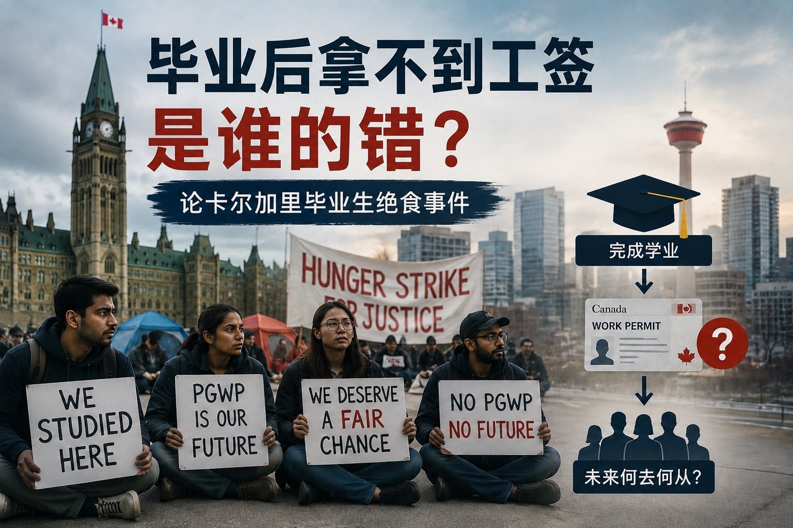

毕业后拿不到工签，究竟是谁的错？ 论卡尔加里国际学生绝食事件
Read in English
2026年7月，阿尔伯塔省卡尔加里，一场原本属于毕业工签 （Post-Graduate Work Permit，PGWP）申请的争议， 最终演变成国际学生绝食抗议事件。 数十名国际学生在卡尔加里市中心搭起帐篷， 连续举行抗议活动，其中部分学生更开始绝食， 希望加拿大政府重新审视他们的毕业工签申请。 随着媒体持续报道，这起事件迅速成为加拿大社会关注的话题。
事情是怎么发生的？
这次事件涉及的大部分学生， 都曾就读于Portage College Continuing Education Diploma项目。 不过，他们实际上课的地点并不在Portage College校园， 而是在Portage College授权合作的院校， 包括位于卡尔加里的Canadian Institute of Osteopathic Therapy （CIOT）以及Edmonton的Campbell College等机构。
学生完成课程后，陆续向IRCC申请毕业工签。 然而，他们收到的却是一份又一份拒签决定。 根据媒体报道，仅卡尔加里就约有480名毕业生受到影响。
IRCC认为，他们完成的是Non-credit Program（非学分课程）， 因此并不符合PGWP资格。
对于很多学生而言，这个结果完全出乎意料。 他们认为，自己是国际学生，支付了高昂学费， 也完成了全部课程，甚至不少人已经找到工作， 却直到毕业以后才发现无法取得毕业工签。
随着越来越多申请被拒， 抗议最终升级为绝食， 希望政府重新审视这些案件。
学生认为：他们是按照当初的规则来到加拿大
他们认为自己选择学校的时候， 一直相信毕业以后可以申请PGWP。 否则，他们不会支付高昂的国际学生学费， 也不会选择来到加拿大读书。
对于很多国际学生而言， 留学从来不仅仅是获得一张毕业证。 真正吸引他们来到加拿大的， 是长期以来大家熟悉的一条路径：
加拿大留学 → 毕业工签 → 加拿大工作经验 → 永久居民
因此很多学生认为， 他们正是基于这样的预期， 才作出了人生和财务上的重大决定。
当毕业以后突然发现自己不能申请PGWP时， 无疑遭遇了巨大打击。
学校怎么说？
Portage College随后发表声明表示， 学校一直积极与IRCC沟通， 并与学生代表保持联系。
但是，学校同时强调： 毕业工签资格一直由IRCC独立决定。 学校不能保证任何毕业生一定符合PGWP资格。
学校也建议学生尽快进行法律咨询。
换句话说： 学校认为，是否能够取得PGWP， 并不是学校可以决定的事情。
IRCC怎么看？
IRCC目前并没有因为抗议改变立场。
从已经公开的信息来看， IRCC认为：问题并不是政策突然改变， 而是这项课程本身一直不符合PGWP资格。
因此，IRCC认为， 这些拒签决定是根据现有法律和政策作出的。
随后，阿尔伯塔省省长Danielle Smith也公开表示： 如果国际学生已经没有合法身份， 又没有获得新的工作许可或永久居民身份， 就应该依法离开加拿大。
政府的态度十分明确： 遭遇可以同情，但移民法律仍然需要执行。
那么，究竟是谁的错？
截至目前，媒体报道和各方公开声明 仍然无法回答几个最关键的问题。
第一，这些学生究竟是哪一年入学的？
如果他们入学时， 根据当时公开的政策， 合理相信毕业后可以申请PGWP， 那么后来因为政策调整或资格认定发生变化而失去资格， 他们的失望并不难理解。
反之，如果相关课程自始就不符合PGWP要求， 那么问题就可能不是政策改变， 而是学校宣传、招生信息或申请人理解出现了偏差。
第二，这些课程在学生入学时，学校是如何介绍PGWP资格的？
学校是否明确表示课程符合PGWP要求？ 招生过程中是否存在误导？ 申请人在作出留学决定前， 又是否有机会核实相关信息？
这些都值得进一步了解。
第三，IRCC究竟是在改变政策，还是在严格执行原有政策？
如果只是对既有规定进行更加严格的执行， 那么这反映的是执法标准趋严。
如果涉及课程资格认定发生变化， 那么是否应给予已经入学的学生合理的过渡安排， 也值得讨论。
目前公开报道里， 学生在讲自己的经历， 学校在发表声明， IRCC也有自己的立场， 但整个事件最关键的事实—— 这些学生入学时究竟适用什么政策、 学校当时如何宣传、 IRCC后来究竟是改变了政策， 还是改变了对课程性质的认定—— 都还没有被披露。
更深层的问题，其实是加拿大国际学生制度发生了改变
如果把时间拉长，就会发现， 这次事件并不是孤立发生的。
过去二十年， PGWP一直是加拿大国际学生制度最重要的一部分。
最初，政府推出PGWP， 是希望吸引国际学生留在加拿大工作。
后来，国际学生人数不断增加， 学校快速扩张， 越来越多机构开始把 “留学—毕业工签—移民” 作为主要招生卖点。
与此同时，也出现了一些制度被利用的情况。
我曾经接触过一位国际学生。 他持有学习许可和Co-op Work Permit， 但来到加拿大以后几乎没有真正上课， 而是一直工作。
这虽然不能代表其他国际学生， 但是类似情况说明国际学生制度 确实存在被利用的空间。
随着国际学生人数快速增长， 加拿大开始重新思考： PGWP究竟应该奖励所有毕业生， 还是应该优先留住真正符合加拿大劳动力需求的人才？
于是，2024年以来， PGWP开始连续改革：
- 取消部分公私合作课程资格；
- 增加语言要求；
- 部分课程增加专业限制；
- 不断调整符合资格的专业名单。
PGWP已经不再只是 “毕业以后的一份开放工签”， 而逐渐成为加拿大劳动力政策的一部分。
这场绝食事件，真正提醒我们的是什么？
无论这场抗议最终如何解决， 它都反映出一个现实： 加拿大国际学生制度已经进入新的阶段。
今天，申请加拿大留学， 重要的是：
- 课程是否符合PGWP资格？
- 是否属于学分课程？
- 未来是否满足语言要求？
- 专业是否仍然符合政策？
- 毕业以后，是否真的存在可行的就业及移民路径？
毕业后拿不到工签，究竟是谁的错？
答案不是学生、不是学校， 也不是政府其中任何一方。
真正的问题在于， 加拿大国际学生制度正在经历一次 从“快速扩张”走向“严格筛选”的转型。
而这场发生在卡尔加里的绝食事件， 正是这场转型过程中最具代表性的缩影。
Who Is Responsible When Graduates Do Not Receive a Post-Graduate Work Permit?
Reflections on the Calgary International Student Hunger Strike
In July 2026, a dispute involving applications for Post-Graduate Work Permits (PGWPs) escalated into a hunger strike by international graduates in Calgary, Alberta.
Dozens of students set up tents and held ongoing demonstrations in the city. Several later began a hunger strike, calling on the federal government to reconsider their refused PGWP applications. As media coverage increased, the dispute quickly became a matter of broader public concern.
At first glance, the issue appears straightforward: students completed their studies in Canada, applied for Post-Graduate work permits, and were refused.
The circumstances, however, are far more complicated.
How Did the Dispute Begin?
Most of the affected students reportedly completed Portage College Continuing Education Diploma programs. Although the credentials were associated with Portage College, the students did not attend classes on the college’s main campus.
Their programs were delivered through partner institutions, including the Canadian Institute of Osteopathic Therapy (CIOT) in Calgary and Campbell College in Edmonton.
After completing their programs, the graduates submitted PGWP applications to Immigration, Refugees and Citizenship Canada (IRCC). Many were subsequently refused.
Media reports suggest that approximately 480 graduates in Calgary may have been affected.
IRCC’s position appears to be that the students completed non-credit programs, which do not meet the eligibility requirements for a PGWP.
For many of the students, the refusals came as a shock. They had paid substantial international tuition fees, completed their programs and, in some cases, already found employment.
They say they did not realize until after graduation that IRCC would consider their programs ineligible for a Post-Graduate work permit.
As more refusals were issued, the demonstrations intensified and eventually developed into a hunger strike.
The Students’ Position: We Came to Canada Based on a Particular Expectation
The students argue that, when they selected their programs, they believed they would be eligible to apply for a PGWP after graduation.
Had they known otherwise, they say they would not have paid international tuition or chosen to study in Canada.
For many international students, studying in Canada has never been solely about obtaining an academic credential.
For years, Canada has been associated with a familiar progression:
Study in Canada → Obtain a PGWP → Gain Canadian work experience → Pursue permanent residence
Many students therefore made significant financial and personal decisions based on the expectation that their education would lead to an opportunity to work in Canada after graduation.
Discovering only after completing their programs that they were not eligible for a PGWP was, understandably, a serious setback.
What Has the College Said?
Portage College has stated that it has been communicating with IRCC and remains in contact with student representatives.
At the same time, the college has emphasized that PGWP eligibility is determined independently by IRCC.
An educational institution cannot guarantee that a graduate will receive a Post-Graduate work permit.
The college has also encouraged affected students to obtain legal or immigration advice.
In other words, the institution’s position is that the final decision on PGWP eligibility rests with the federal government, not with the school.
What Is IRCC’s Position?
IRCC has not changed its position in response to the protest.
Based on the information currently available, the department appears to maintain that the issue is not a sudden change in policy.
Rather, it considers the programs themselves to have been ineligible because they were non-credit programs.
From IRCC’s perspective, the refusals were therefore made under existing law and policy.
Alberta Premier Danielle Smith later stated publicly that international students who no longer hold valid temporary status, and who have not obtained another work permit or permanent residence, are expected to leave Canada in accordance with immigration law.
The government’s message has been clear: the students’ circumstances may attract sympathy, but immigration requirements still apply.
So, Who Is Responsible?
At this stage, the available media reports and public statements do not answer several of the most important questions.
When did the students begin their programs?
If the students enrolled at a time when publicly available information reasonably suggested that their programs would lead to PGWP eligibility, and the policy or interpretation later changed, their frustration is understandable.
If, however, the programs were never eligible, the issue may involve inaccurate recruitment information, unclear institutional communication or a misunderstanding by the applicants.
How was PGWP eligibility presented when the students enrolled?
Did the school or its recruitment partners explicitly state that the programs were PGWP-eligible?
Were students given inaccurate or incomplete information? Did they have a realistic opportunity to verify the immigration consequences of the program before paying tuition and beginning their studies?
These questions require closer examination.
Did IRCC change the policy, or did it begin enforcing an existing rule more strictly?
If IRCC is simply applying a long-standing rule more rigorously, the dispute may be about enforcement rather than a policy change.
If the department changed how it classified the programs, a separate question arises: should students who enrolled under an earlier understanding have received transitional protection?
At present, the students have presented their version of events, the college has issued statements, and IRCC has maintained its own interpretation.
But the most important facts remain unclear:
- what rules applied when the students enrolled;
- what information they received from the school or recruiters; and
- whether IRCC changed the policy or changed its interpretation of the programs.
Without those facts, it is difficult to assign responsibility conclusively.
The Broader Issue: Canada’s International Student System Has Changed
This dispute did not emerge in isolation.
For nearly two decades, the PGWP has been one of the most important features of Canada’s international student system.
The program was originally intended to allow eligible international graduates to remain in Canada, gain work experience and contribute to the labour market.
Over time, however, international enrolment expanded rapidly. Educational institutions increased recruitment, and many schools and agents began promoting the sequence of study, work and immigration as a central selling point.
At the same time, the system also created opportunities for misuse.
I once encountered an international student who held both a study permit and a co-op work permit.
After arriving in Canada, the student attended almost no classes and worked continuously instead.
That example does not represent international students generally. It does, however, illustrate how a system intended primarily for education could sometimes be used as an indirect pathway into the labour market.
As international student numbers grew, Canada began reconsidering the purpose of the PGWP.
Should it be widely available to graduates, or should it be more closely targeted toward individuals whose education and skills align with Canada’s labour market needs?
Since 2024, the government has introduced several major reforms:
- ending PGWP eligibility for certain public-private partnership programs;
- introducing language requirements;
- imposing field-of-study restrictions on many non-degree programs; and
- adjusting eligible fields according to labour market priorities.
The PGWP is therefore no longer simply an open work permit associated with graduation.
It is increasingly being used as part of Canada’s broader labour market and immigration strategy.
What Should Future Students Learn from This Case?
Regardless of how the hunger strike is ultimately resolved, the case highlights a new reality.
Planning to study in Canada now requires much more than confirming that a school is willing to issue an admission letter.
Prospective students should ask:
- Is the specific program PGWP-eligible?
- Is it a credit-bearing program?
- Will language requirements apply?
- Is the field of study eligible under the rules that apply to the student?
- Could policy changes affect the program during the period of study?
- Even if a PGWP is issued, does the program lead to realistic employment and immigration opportunities?
These questions should be considered before tuition is paid, not after graduation.
Final Thoughts
Who is responsible when graduates do not receive the work permits they expected?
Based on the information currently available, the answer cannot be reduced to the students, the school or the government alone.
The deeper issue is that Canada’s international student system is moving from a period of rapid expansion toward a more selective model.
The Calgary hunger strike is one of the clearest examples of the tension created by that transition.
The most important lesson is not that graduation should automatically lead to a PGWP.
It never has.
The real question is why these students believed their programs would make them eligible, what information that belief was based on, and whether that information was accurate.
For future applicants, careful verification at the beginning of the process may be far more valuable than searching for a remedy after graduation.